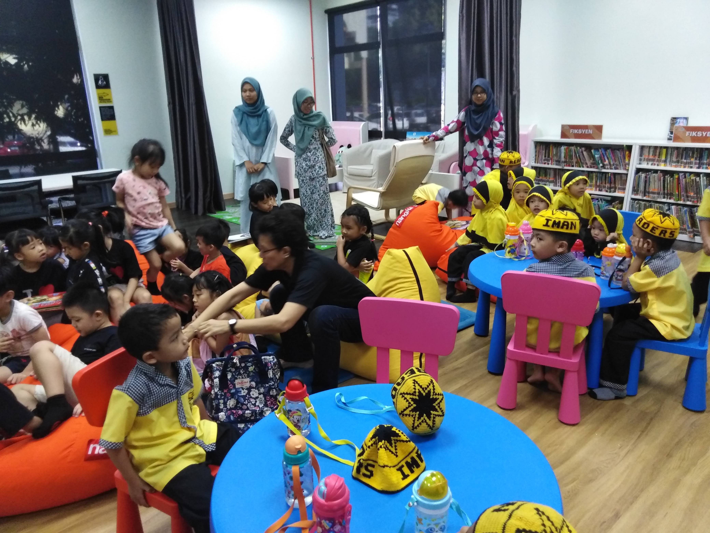
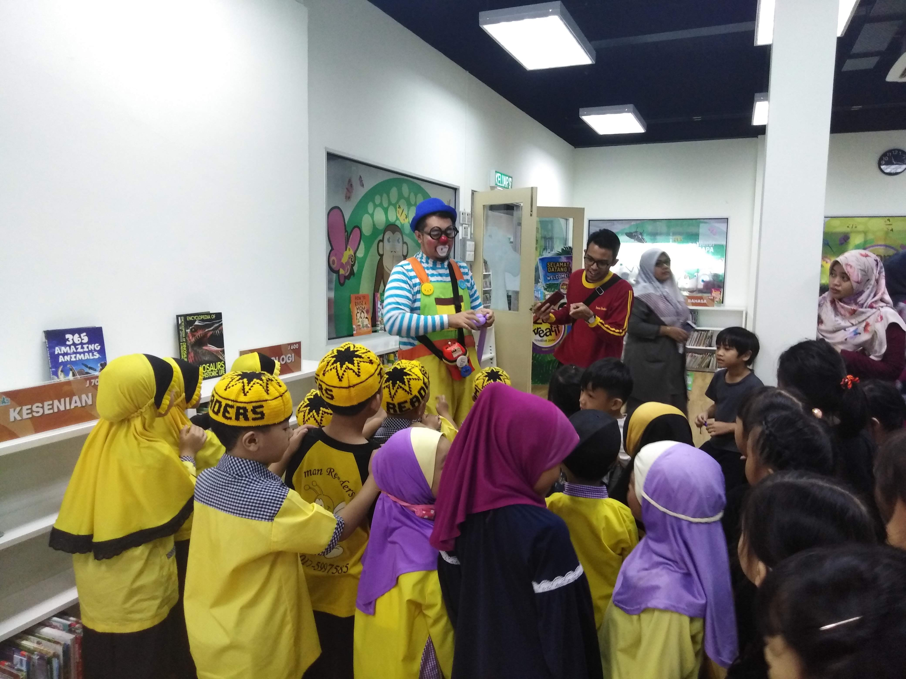

My experiences
21 years of life is not a long journey, yet it brings me tons of experiences since I was younger until today. Yes, I have a lot of stories to share but in the meantime, I will highlight my experiences gained while I underwent internship for the first time as it left such a huge impact towards my perspectives about working lifes. The internship term started early 2020 only for a month and half. Eventhough it was one of the requirements to finish my diploma precisely, I did enjoyed the journey a lot. As we can choose which organization we want to undergo the internship at, I chose PPAS. The picture below was taken on the last day of internship where my coursemate and I suddenly bumped into our Director of PPAS, Puan Mastura Binti Haji Muhamad. She asked us whether we feel welcomed to the organization and checking us out. Until now, I believes her kindness and warm-hearted personality is what makes people comfortable to put faith on her.

During those time, I have been learned so much things regarding the library itself and its management. There are eight main departments operating daily to make sure the users could get the best services. Unfortunately, I only had chance to serves six out of eight departments. The Human Resource department has drafted out my own schedule regarding which department I will enter every week, Hence, it made my internship journey smooth and clear.This is the rough schedule for me given by the HR department:
- Week 1 - Collection Development department
- Week 2 - Documentation department
- Week 3 - Corporate department
- Week 4 - Planning and Development department
- Week 5 - Customer Service department
- Week 6 - Reference and Research department
In the meantime, there are few other students from other universities such as Universiti Teknologi MARA Puncak Perdana and Jasin, Universiti Pertahanan Nasional Malaysia and Universiti Islam Antarabangsa Malaysia who also underwent their internship for various programs. I have made friends with them. Because of them, I can survived my internship period with laughs and joys. Those memories are precious, as that was the first time I have made contacts with people for the purpose of working. Interestingly, I still contacting few of them from time to time.
 
Another great experience I have got during my internship was when I volunteered in a program for kindergarten kids handled by PPAS. As a person who is loving children , I was really enjoying every moments with them because it was boosting my serotonin and dopamine and I felt good for the the rest of the day eventhough I have got mad by my supervisor earlier in the morning because I was late for the preparation of the program. There were many activities provided by the Customer Service department for the kids' program which included reading storybook, storytelling, handcraft hour, playtime, clown entertainment and many more. Actually, I was more excited than the kids were.

Major yet simple reason why I like it there at PPAS is because the scenery that I get to see every morning while doing my shelving duty. It was such a beautiful piece from the nature eventhough it was a human made. Actually, there are more abd broad expereience that I want to talk about but, overall, I love all of my experiences undergoing my internship in PPAS and I would love to visit there again if I have time.
Entering degree life, I hope I can get a lot of experiences whether it is sweet or bitter because there is a quote by Julius Caesar, "expereience is the teacher of all things".